프롬프트만 넣으면 생기는 일
AI로 만든 디자인 중에는 촌스럽지도 않고 품질이 낮지도 않은데 이상하게 'AI가 만든 티'가 나는 것들이 있어요. 반대로 AI를 썼는데도 디자이너가 직접 만든 것처럼 보이는 결과물도 있죠. 발표자는 같은 AI, 비슷한 프롬프트, 같은 도구를 쓰는데 왜 결과가 갈리는지 잘 만든 사례를 뜯어봤고, 세 가지 공통점과 그 순서를 찾았다고 해요.
먼저 흔한 출발부터 보여 줘요. Claude Design 첫 화면의 'What should we create?' 입력창에 바로 프롬프트를 넣어요. 아래 Design system 칸은 None, 모델은 Opus 5로 되어 있어요.
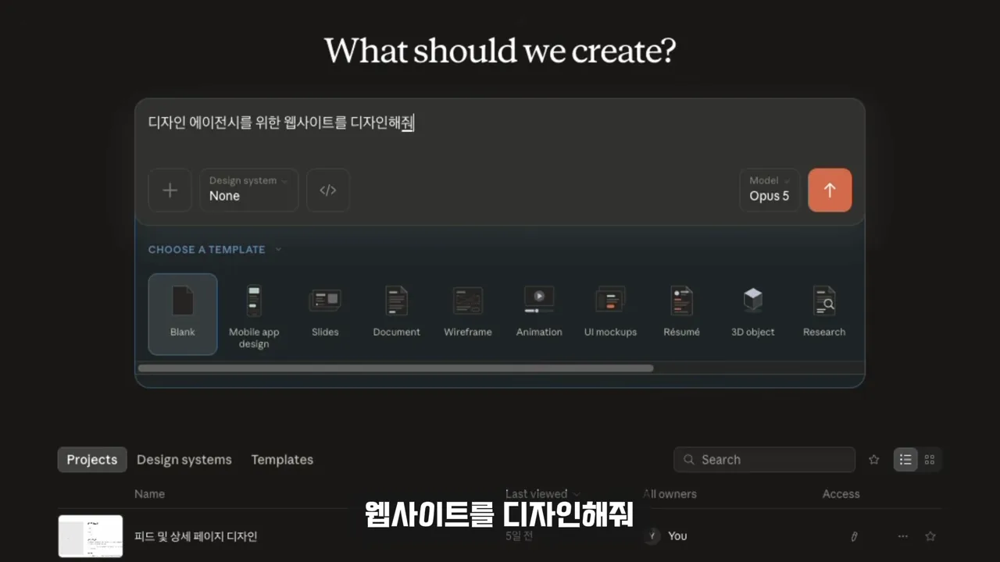
몇 가지 선택지를 고르면 이런 페이지가 나와요. 크림색 배경에 '말이 되기 전의 감정을, 디자인합니다'라는 큰 명조체 제목이 있고 여백도 넉넉해요. 폰트도 크고 버튼도 잘 만들어져 있어서 크게 나쁘진 않아요. 그런데 어딘가 AI가 만든 느낌이 나요.
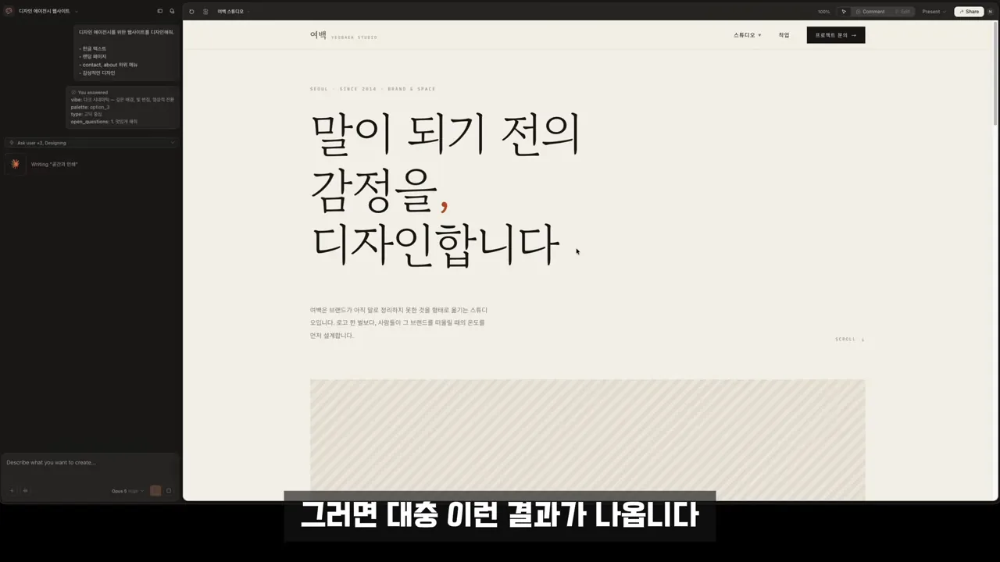
여기서 대부분은 프롬프트를 더 고쳐요. '좀 더 고급스럽게', '더 미니멀하게', '애플처럼 만들어 줘'. 아래는 그렇게 고친 결과예요. 배경이 검게 바뀌고 제목이 고딕체 '설계합니다'로 달라졌지만, 큰 제목 아래 짧은 문단과 이미지 자리가 오는 뼈대는 그대로예요.
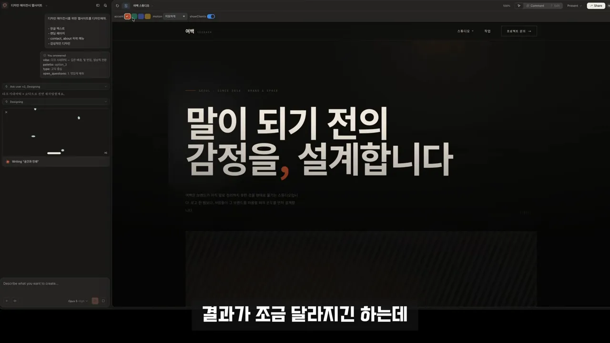
1단계: 내 서비스에 맞는 레퍼런스 고르기
바꾼 순서의 첫 단계는 Claude Design을 켜기 전에 레퍼런스를 찾는 거예요. 내가 실제로 만들려는 것과 비슷한 디자인이 있는지부터 봐요. 발표자는 대표적인 웹 UI(User Interface) 레퍼런스 사이트로 Awwwards를 들어요. 화면은 Awwwards의 사이트 목록이에요.
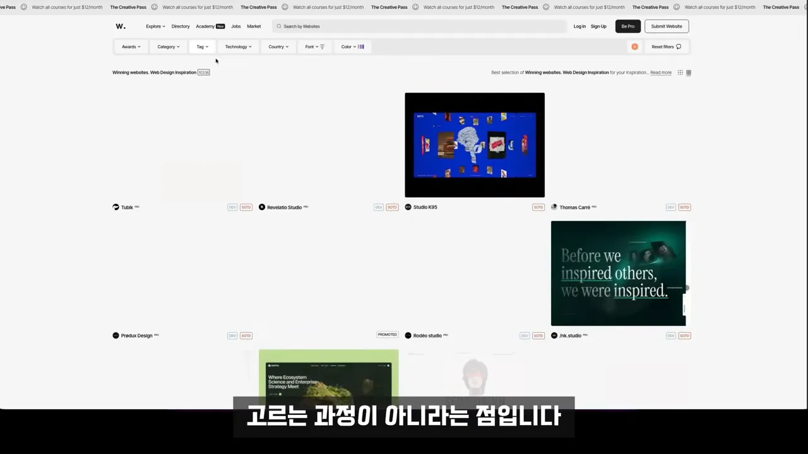
멋있는 것보다 맞는 것
여기서 발표자가 강조하는 건 이게 '무조건 멋있는 걸 고르는 과정'이 아니라는 점이에요. 기업용 AI SaaS를 만든다고 해 볼게요. 아주 화려한 사이트를 고르면 보기엔 멋있어도 그 서비스에 필요한 톤과는 안 맞을 수 있어요. 이 말을 할 때 화면에는 웹 모션 기법을 모아 둔 Made With GSAP(GreenSock Animation Platform) 사이트가 나와요. 가운데 사진 패널이 고리 모양으로 휘어 도는 효과처럼 시선을 끄는 장치가 많은 사이트예요. 다음 단계에서 발표자가 토큰을 뽑는 사이트도 이곳이에요.
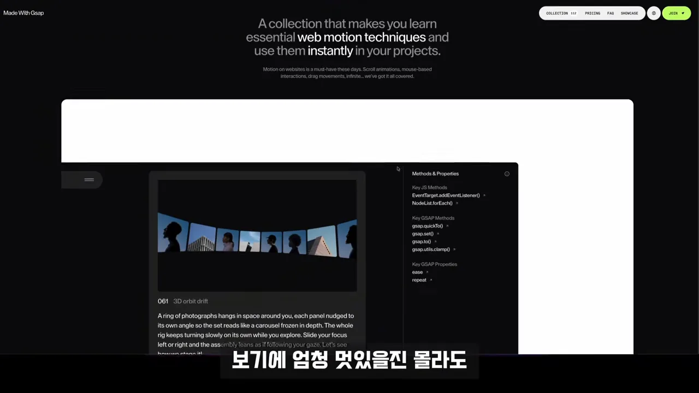
잘못된 레퍼런스를 고르면 뒤에서 아무리 정교하게 작업해도 잘못된 방향으로 정교해질 뿐이에요. 그래서 고를 때 던질 질문은 하나면 충분해요.
이 디자인이 내가 만들 서비스와 잘 맞을까?
— 영상 02:16 (화면 자막)
2단계: 토큰을 뽑아 디자인 시스템부터 만들기
레퍼런스를 골랐다면 보통은 캡처해서 이미지로 넘기겠죠. 발표자는 그렇게 하지 않아요. 좋은 디자인에는 폰트 크기, 색, 간격, 버튼 스타일처럼 반복되는 규칙이 있고, 이런 값을 디자인 토큰이라고 불러요. 이미지 한 장은 그 규칙을 AI가 눈으로 짐작하게 만들지만, 토큰은 규칙을 숫자로 바로 건네요.
이 단계 전체를 한 줄로 그리면 이래요. 레퍼런스에서 토큰을 뽑고, 토큰으로 시스템을 만들고, 화면은 시스템에서 만들어요.
Dembrandt로 토큰 뽑기
토큰을 하나씩 직접 찾는 대신 Dembrandt라는 도구를 써요. 터미널을 열고 웹사이트에 나온 설치 명령을 그대로 붙여 넣어요.
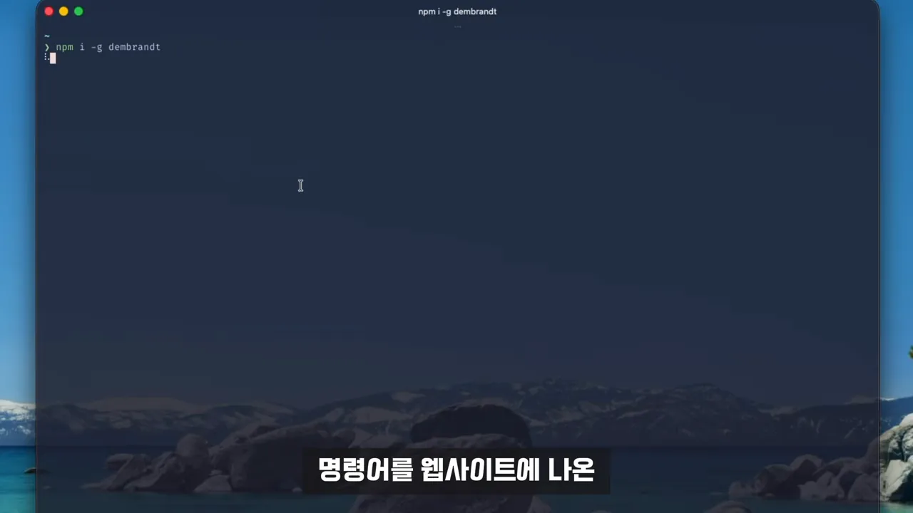
npm i -g dembrandt
dembrandt https://madewithgsap.com/설치가 끝나면 dembrandt 뒤에 레퍼런스 사이트 URL(Uniform Resource Locator)을 붙여 실행해요. 그러면 그 사이트에 실제로 쓰인 값이 항목별로 정리돼 나와요. 아래 화면에서 Border Radius 아래 4px부터 100%까지 둥글기 값이, Buttons 아래 라임색 #c9fe6e 배경과 25px 둥글기가 보여요.
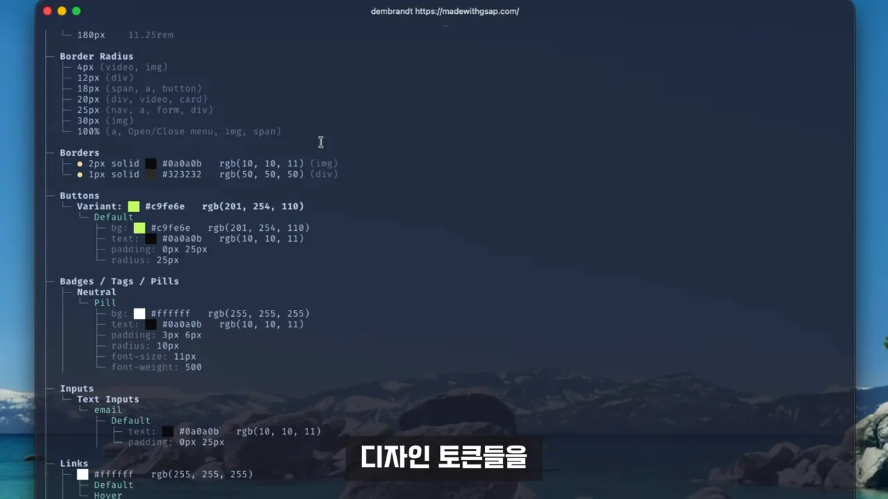
| 화면에 보이는 항목 | 뽑힌 값 예시 |
|---|---|
| Border Radius | 4px(영상·이미지), 18px(버튼), 25px(내비게이션·폼) 등 |
| Borders | 2px solid #0a0a0b, 1px solid #323232 |
| Buttons | 배경 #c9fe6e, 글자 #0a0a0b, padding 0px 25px, radius 25px |
| Badges / Tags / Pills | 배경 #ffffff, padding 3px 6px, radius 10px, 글자 11px·굵기 500 |
토큰을 바로 쓰지 말고 디자인 시스템부터
여기서 중요한 건 토큰을 Claude Design에 바로 붙여 넣지 않는다는 점이에요. 먼저 이렇게 요청해요.
이 레퍼런스에서 추출된 디자인 토큰을 분석해서 디자인 시스템으로 만들어 줘.
— 영상 03:22
그러면 결과물 한 장이 아니라 다시 쓸 수 있는 디자인 시스템이 생겨요. 아래는 그렇게 만든 'Cascades Design System'이에요. 가운데 목록에 Colors, Components, Motion, Spacing, Type 같은 묶음이 있고, 오른쪽에는 Cascades 워드마크와 'Motion is the medium.' 예시 페이지, 라임색 강조 사용법이 보여요. 왼쪽 대화창에서는 Claude가 '참고한 사이트가 남의 사이트라 정체성은 그대로 베낄 수 없었고, 폰트도 대체했다'는 식으로 한계를 먼저 밝히고 있어요.
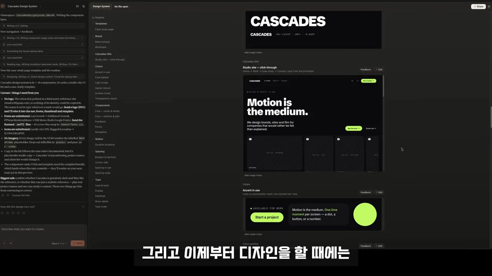
이제부터는 '좀 더 세련되게', '여백을 더 주세요'처럼 말로 설명하지 않아요. 이 시스템을 기준으로 화면을 만들어요. 아래는 시스템을 바탕으로 만든 회사 소개 영역이에요. 굵은 'We design it, then we make it move.' 제목, 오른쪽의 설립 연도·팀 규모 표, 아래 Brand identity·Digital·Motion 세 칸이 같은 글꼴과 간격 규칙을 따르고 있어요.
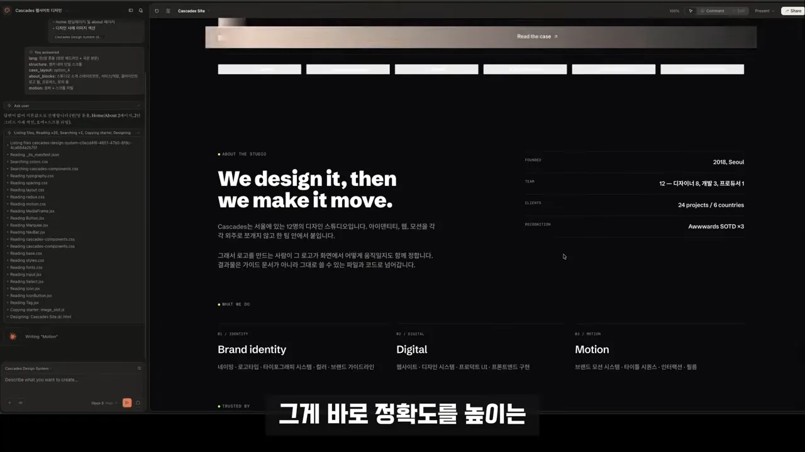
발표자는 이 단계의 핵심을 이렇게 정리해요. 토큰을 뽑는 것 자체가 목적이 아니라, AI가 새로 결정해야 할 디자인 선택지를 줄이는 것이 정확도를 높인다는 거예요.
3단계: 한글 문장 다듬기
마지막 과정이 하나 남아 있어요. 디자인만 보면 괜찮은데 글을 읽으면 AI 냄새가 확 올라올 때가 있거든요. 발표자가 예로 든 건 첫 화면의 서브타이틀이에요. 빨간 상자 안 문장을 보면 틀린 곳은 없는데 곰곰이 읽으면 어딘가 어색해요.
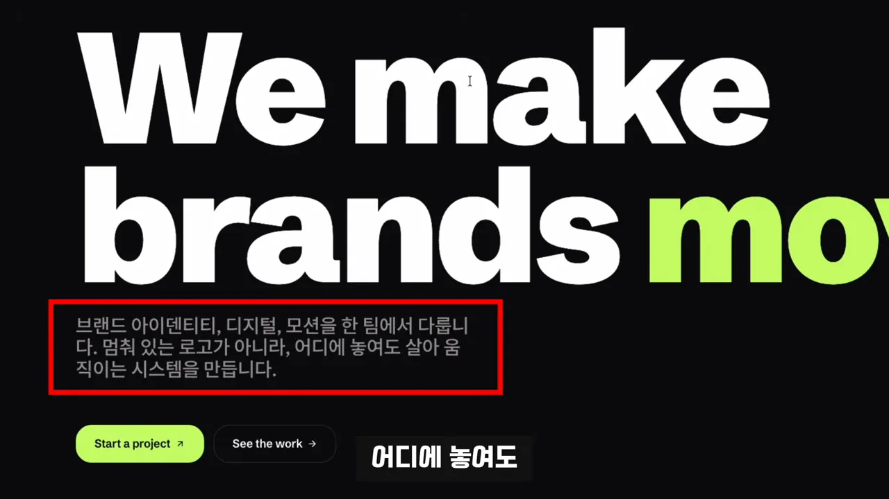
그래서 디자인은 그대로 두고, 한글만 따로 꺼내 다른 AI가 읽고 고치게 해요. 발표자는 이 과정을 ChatGPT로 했어요. 화면을 보면 ChatGPT가 'How we work' 영역의 문장마다 '현재'와 '추천'을 나누고, 왜 고쳐야 하는지 한 줄씩 붙였어요. 예를 들어 '리서치와 인터뷰로 2주'는 지나치게 잘린 문장이라고 짚고, '방향이 갈리면 여기서 끝납니다'는 프로젝트를 끝낸다는 뜻처럼 들릴 수 있다고 지적해요.
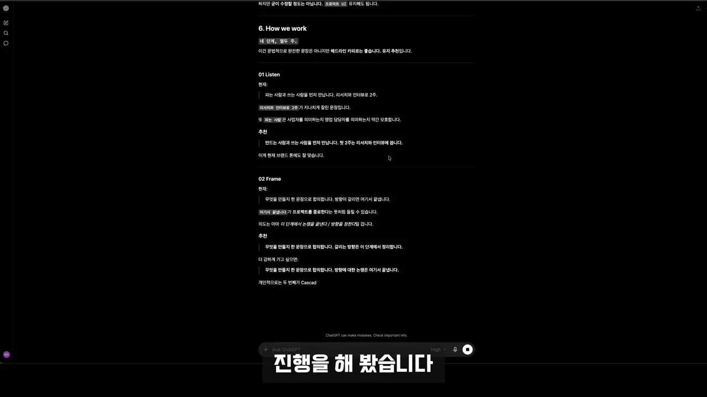
| 위치 | 현재 | ChatGPT 추천 |
|---|---|---|
| 01 Listen | "파는 사람과 쓰는 사람을 먼저 만납니다. 리서치와 인터뷰로 2주." | "만드는 사람과 쓰는 사람을 먼저 만납니다. 첫 2주는 리서치와 인터뷰에 씁니다." |
| 02 Frame | "무엇을 만들지 한 문장으로 합의합니다. 방향이 갈리면 여기서 끝납니다." | "무엇을 만들지 한 문장으로 합의합니다. 갈리는 방향은 이 단계에서 정리합니다." |
이 수정안을 들고 Claude Design에 다시 수정을 요청해요. 아래 화면에서 같은 서브타이틀이 '브랜드 아이덴티티부터 UX, 모션까지 모든 시스템을 생동감 있게 구현합니다.'로 바뀌었어요. 대구를 걷어 내고 한 문장으로 줄이니 실제 회사 소개처럼 읽혀요.
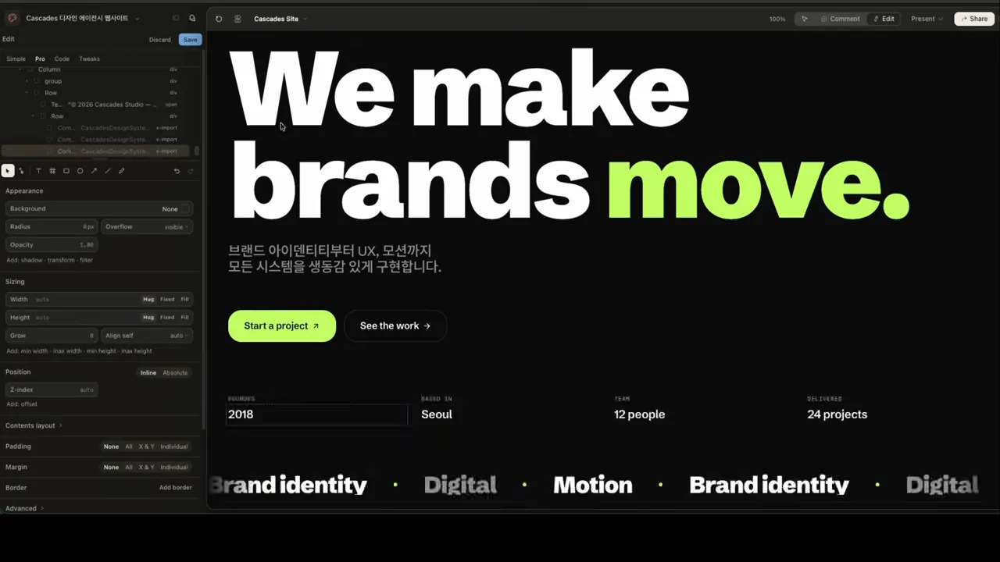
마지막 단계는 단순해요. 디자인을 다 만들면 한글 텍스트를 다듬어요. 여기까지만 해도 마지막까지 남아 있던 AI 느낌이 많이 줄어요.
세 단계의 순서가 중요한 이유
발표자는 세 단계를 화면 한 장으로 정리해요. 1단계는 컨셉에 맞는 디자인 레퍼런스 찾기, 2단계는 디자인 시스템 기반으로 만들기, 3단계는 AI가 만든 텍스트 검수하기예요.
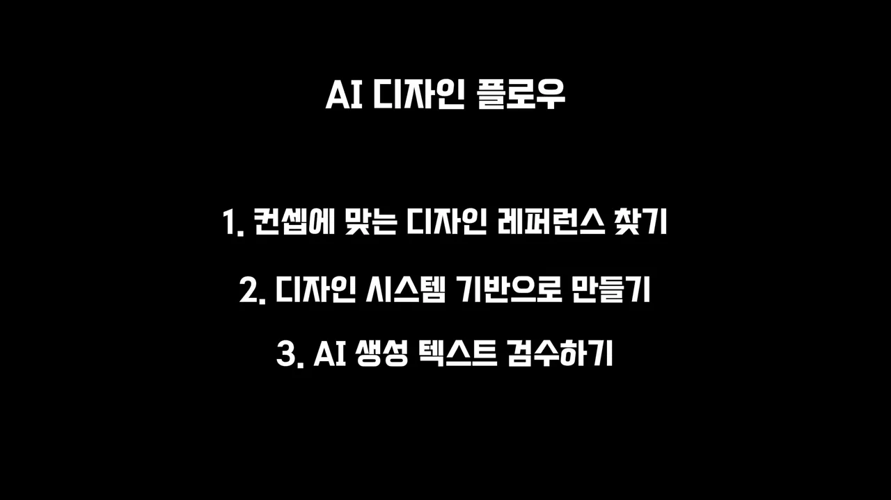
중요한 건 세 단계가 순서대로 이어져 있다는 점이에요. 하나를 건너뛰면 어디서 문제가 나는지도 영상이 짚어 줘요. 앞 단계가 틀리면 뒤 단계를 아무리 잘해도 되돌릴 수 없어요.
마지막으로 처음 화면과 나란히 비교해요. 왼쪽 '전'은 프롬프트만 넣은 크림색 페이지, 오른쪽 '후'는 세 단계를 거친 검은 바탕에 라임색 'move.'가 들어간 페이지예요. 오른쪽은 2단계에서 뽑은 레퍼런스의 색 규칙을 그대로 따르고 있어요.
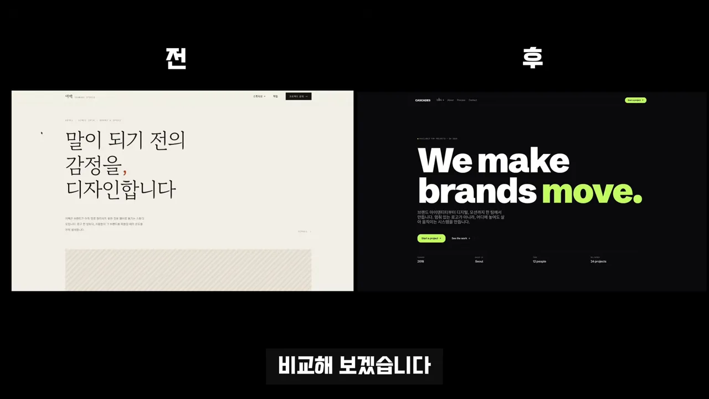
오른쪽을 만들면서 대단한 프롬프트나 기술을 쓰지 않았어요. 오히려 AI가 결정해야 할 것들을 줄여 줬어요. 좋은 디자인이 이미 가진 기준을 AI가 쓸 수 있게 만드는 것, 발표자는 이게 AI 디자인에서 훨씬 중요한 포인트라고 봐요.
그러니까 이제 클로드로 디자인하실 때 바로 프롬프트부터 넣지 마세요.
— 영상 06:07